路由的一个作用在于实现 SPA 单页应用。它能保证当用户切换到不同路由时，浏览器不会跳转，只是把页面中的部分内容替换掉。Angular 就是一种 SPA 框架。
另一个作用时为每一个视图状态分配一个 url。或者说，SPA 是一组视图状态列表。
路由基础知识
路由相关对象介绍
| 名称 | 简介 |
|---|---|
| Routes | 路由配置，保存着哪个 URL 对应展示哪个组件，以及在哪个 RouterOutlet 中展示组件 |
| RouterOutlet | 在 HTML 中标记路由内容呈现位置的占位符指令 |
| Router | 负责在运行时执行路由的对象，可以通过调用其 navigate() 和 navigateByUrl() 方法来导航到一个指定的路由 |
| RouterLink | 在 HTML 中声明路由导航用的指令 |
| ActivatedRoute | 当前激活的路由对象，保存着当前路由的信息，如路由地址，路由参数等 |
Router 对象在应用中的位置：
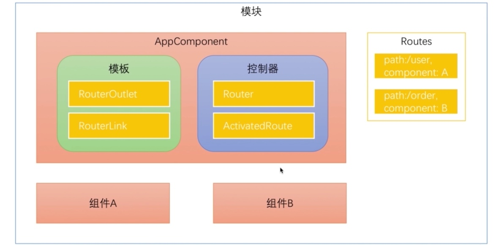
- Routes
Router 是模块级别的，它由一组配置信息组成，至少包括两个必选属性，path 属性和 component 属性。path 属性指定 url，component 属性指定展示的组件。
在上面的例子中，当 path 为 user 时，模版中展示 component A 的内容；path 为 order 时，模版中展示 component B 的内容。
- RouterOutlet
那么当 path 为 user 时，模版中展示 component A 的内容，但模版有很多内容，component A 应该展示在什么位置上呢？
这就需要我们在模版中设定 RouterOutlet，RouterOutlet在哪，组件内容就显示在哪。我们也称之为 “插座”。
- RouterLink
RouterLink 实现了在模版中的路由跳转。
- Router
调用 navigate() 方法来改变浏览器地址，实现路由转换。
注：Router 和 RouterLink 的作用是相同的，都用于导航到特定的 URL。区别在于 Router 是在控制器中使用的，RouterLink 是在模版中使用的。
- ActivatedRoute
通过 URL 来传递数据，这些数据会保存在 ActivatedRoute 中。当我们由路由 A 转到路由 B 时，我们可以通过在组件 B 中调用 ActivatedRoute 来获得参数中的信息。
一个简单的小例子
生成一个新的 router 文件
1 | ng new router --routing |
注：new 命令是不能在已有的 Angular-cli 项目中执行的，它会创建一个完全全新的项目。
创建结果如下，它会自带一个 app-routing 的模块：
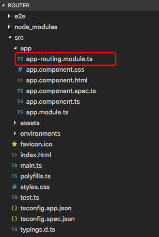
这时，AngularCli 已经帮我们添加好相关的引用：
app.module.ts
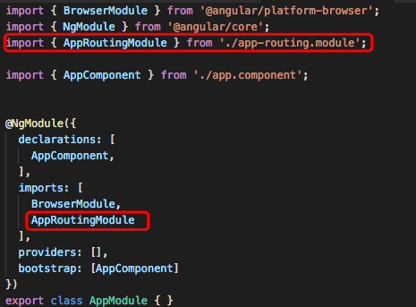
根组件中有默认插座的位置：
app.component.html
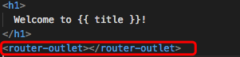
再创建两个组件 home 和 home2，下面我们要做的就是在这两个组件视图之间进行切换:
1 | ng g component home |
然后我们在 app-routing.module 中加入两个路由：
app-routing.module.ts
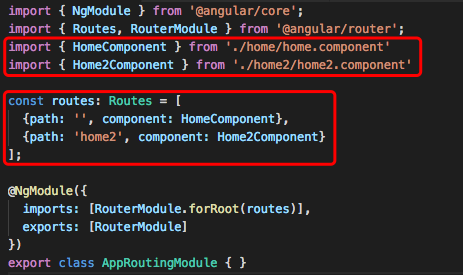
路由集合，每个路由由两个属性组成： path 和 component。
注：path 属性不要以 / 开头， / 表示根路由。
模版路由
首先，我们尝试使用 routerLink 在模版中进行路由切换。
app.component.html
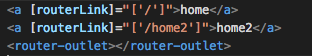
在这里我们使用了 / 开头，是因为这里的路由是我们定义的第一层路由，并没有涉及子路由。
这样，我们就在模版中实现了路由切换。
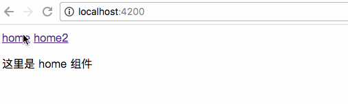
空路径时，显示的是 home.component 内容，/home2 路径时，显示的是 home2.component 内容。
当我们查看 DOM 结构时，会发现模版出现在“插座” <router-outlet></router-outlet> 下方。
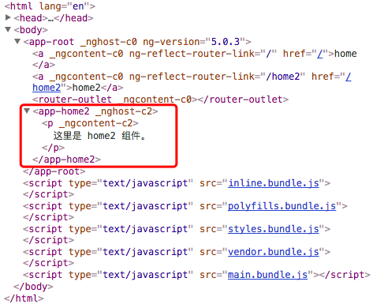
ts 路由
我们也可以在 ts 文件中实现相同的路由跳转，首先，我们在模版中定义一个按钮：
app.component.html1
<input type="button" value="进入home2" (click)="toHome2()">
然后在相应的 ts 文件中加入导航的处理，注意，ts 文件中的路由对象是 Router，它的语法与模版中的用法相同，也是一个数组。
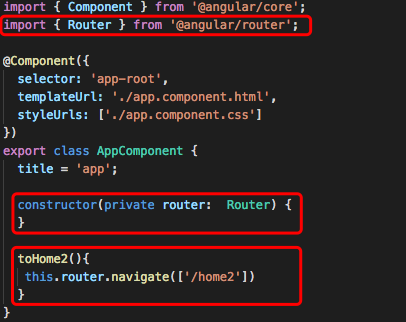
我们在浏览器中查看效果，会发现点击按钮也实现了完全相同的路由切换效果：
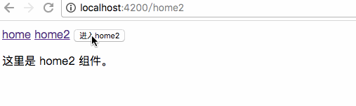
如果当我们输入一个不存在的路由，需要使用通配符：
app-routing.module.ts
1 | const routes: Routes = [ |
这里的 ** 代表任何路径，如果不匹配上边的路由，则会跳转到 Code404Component 组件。
注：路由匹配是由上到下依次匹配的，因此通配符配置一定要放在路由配置的最后。
路由时传递数据
- 查询参数
形式：/product?id=1&name=2
方法：ActivatedRoute.queryParams[id]
- 路由路径
形式：{path:/paroduct/:id} => /product/1
方法：ActivatedRoute.params[id]
- 路由配置
形式：
1 | { path:/paroduct， |
home21
2
3
4
5
6
这样，在路由当中就会存在一个名为 id 的查询参数。
<img src="router-3.gif">
home2.component.ts
import { Component, OnInit } from ‘@angular/core’;
import { ActivatedRoute } from ‘@angular/router’;
@Component({
…
})
export class Home2Component implements OnInit {
private id: number;
constructor(private routeInfo: ActivatedRoute) { }
ngOnInit() {
// 获得 id 的信息
this.id = this.routeInfo.snapshot.queryParams[‘id’];
}
}1
2
3
4
5
6
7
8
9
10
11
12
13
#### 路由路径
形式：`{path:/paroduct/:id}` => `/product/1`
方法：ActivatedRoute.params[id]
通过 url 路由进行数据传递需要进行三步修改：
* 1、修改路由中的属性，使其能携带参数
* 2、修改模版中的跳转链接，使其能携带参数
* 3、将ts中的路由对象改为路由订阅方式
app-routing.module.ts
const routes: Routes = [
…
{path: ‘home2/:id’, component: Home2Component},
…
];1
2
home2.component.html
home21
2
home2.component.ts
import { Component, OnInit } from ‘@angular/core’;
import { ActivatedRoute } from ‘@angular/router’;
@Component({
…
})
export class Home2Component implements OnInit {
private id: number;
constructor(private routeInfo: ActivatedRoute) { }
ngOnInit() {
// 相对于查询参数，只需要将 queryParams 改为 params 即可
this.id = this.routeInfo.snapshot.params[‘id’];
}
}1
2
3
4
5
6
7
8
9
10
如果我们创建了两个按钮，都跳转到相同的路由 `/home2/:id`，例如：由 home2/1 切换到 home2/2，那么在切换时会遇到一个问题：
路由虽然切换到了 `home2/2`，但是模版的内容却没有更新，仍为 `home2/1`。
这是由于 `this.routeInfo.snapshot` 导致的。每次路由切换时，home2 组件会被创建，我们从参数快照中拿出相应的 id。但是如果从一个 home2 组件跳到另一个 home2 组件（只是路由路径改变），那么 home2 组件不会被重新创建，不会执行 ngOnInit 方法。
修改这一不足的方法是使用参数订阅方法：
home2.component.ts
ngOnInit() {
// 使用快照无法在相同路由之间正确切换
// this.id = this.routeInfo.snapshot.params[‘id’];
// 参数订阅方法
this.routeInfo.params.subscribe((params: Params) => {
this.id = params[‘id’]
})
}1
2
3
4
5
6
除非可以确保不会出现路由到自身的情况，否则不要使用 snapshot 方法。snapshot 方法的优点是更节省资源。
#### 路由配置
形式： 在路由中传递 data 数据
const routes: Routes = [
…
{
path: ‘home2/:id’,
component：ProductComponent,
data: [{isProd: true}]
},
…
];1
方法：ActivatedRoute.data[0][isProd]
import { Component, OnInit } from ‘@angular/core’;
import { ActivatedRoute } from ‘@angular/router’;
@Component({
…
})
export class Home2Component implements OnInit {
private isPro;
constructor(private routeInfo: ActivatedRoute) { }
ngOnInit() {
this.isPro = this.routeInfo.snapshot.data[0][‘isPro’];
}
}1
2
3
4
5
6
7
8
9
### 重定向路由
在用户访问一个特定的地址是，将其重定向到另一个指定的地址。例如：
www.aaa.com => www.aaa.com/products
www.aaa.com/x => www.aaa.com/y
app-routing.module.ts
{path: ‘’, component: HomeComponent},
{path: ‘home’, redirectTo: ‘’, pathMatch: ‘full’},1
2
3
4
5
6
7
8
9
10
11
12
13
14
15
16
17
18
19
在上面的代码中，路由 `/home` 将会重定向到 `''`，因此无需为它指定 component 信息。
`pathMatch: full` 代表路由与 path 完全匹配时，才会进行跳转。
`pathMatch: prefix` 代表匹配以 path 开头的。
### 子路由
我们可以在路由下新建子路由
app-routing.module.ts
<img src="router-11.png">
这样我们在 `/home2` 下定义了两个子路由，一个导航到 `/child1`，另一个导航到 `/child2`，并在 app-routing 模块中进行了配置。
那么子路由的组件究竟显示在父组件的什么位置呢？与前面说的类似，它将显示在父组件“插座” `<router-outlet></router-outlet>` 标签的下方。
home2.component.html
这里是 home2 组件。
1
2
需要注意的是，当我们在写子路由时，注意不要以 `/` 开头，否则它将对根目录的路由进行切换。如果希望表示以当前路由作为基准，则可写作 `./xxx`。在本例中，我们写做：
这里是 home2 组件。
子路由1
子路由2
1
2
3
4
5
6
7
8
9
10
11
12
13
14
15
16
17
18
19
20
21
22
23
24
25
26
效果如下：
<img src="router-4.gif">
查看 DOM 会发现 router-outlet 是存在信息
<img src="router-12.png">
路由信息都是在模块级别配置的，而组件本身是不涉及路由信息的。
这意味着通过配置我们既可以为组件配置为子路由，也可以为其单独配置一个路由，路由信息与组件分离，为开发提供了很大的灵活性。
### 辅助路由
辅助路由是与其他路由搭配在一起使用的。主路由与辅助路由是并列关系，可设置当某个主路由时，辅助路由显示不同的组件。当切换至某个路由时，辅助路由也随之改变。
可用于侧边栏悬浮框等功能。
实现辅助路由做以下几件事：
* 在组件的模版上再定义一个插座来显示新组件
* 开发一个新组件，显示在新定义的插座上
* 通过路由参数控制新的辅助插座是否显示新组件
app.component.html
1
2
3
4
上面代码声明了一个名为 aux 的辅助路由插座。
app-routing.module.ts
const routes: Routes = [
…
{path: ‘home2’, component: Home2Component,},
{path: ‘aux’, component: AuxComponent, outlet: “aux”},
…
];1
2
3
4
`outlet: "aux"` 代表此路由只能显示在 `<router-outlet name="aux"></router-outlet>` 的插座上。
app.component.html
…
进入aux
退出aux
…1
2
3
4
5
6
7
8
9
10
其中，`{aux: 'aux'}`，前者 `aux` 代表辅助插座 `outlets` 的值，后者代表要显示的组件名称。
实现效果如下：
<img src="router-5.gif">
如果在辅助路由上添加了 `primary` 字段，那么不管当前主路由是什么，均会将主路由修改为 `primary` 对应的路由上。
在下面这个例子中，当我点击“进入aux”按钮时，路由一定会切换到 `/home`
…
进入aux
退出aux
…1
2
3
4
5
6
7
8
9
10
11
12
13
14
15
16
17
18
19
20
21
### 守卫路由
路由守卫相当于拦截器，它是一段逻辑代码，在进入或离开路由时执行。
* CanActivate: 处理导航到某路由的情况
* CanDeactivate: 处理从当前路由离开的情况
* Resolve: 在路由激活之前获取路由数据
#### CanActivate
CanActivate 用于处理导航到某路由的情况。
新建一个文件 `permission.guard.ts`，实现 CanActivate。在下图中，我们发现 canActivate 接口提供了三种返回类型，分别是 `boolean`，`Observable<boolean>` 和 `Promise<boolean>`
<img src="router-13.png">
最简单的返回值是 boolean，当返回 `false` 时，路由被守卫拦截，无法执行路由的跳转；反之相反。
我们写一个最＝简单的例子来实现 CanActivate 路由守卫：
import {CanActivate, ActivatedRouteSnapshot, RouterStateSnapshot} from ‘@angular/router’;
import { Observable } from ‘rxjs/Observable’;
export class PermissionGuard implements CanActivate {
canActivate(route: ActivatedRouteSnapshot, state: RouterStateSnapshot): boolean {
var hasPermission: boolean = Math.random() < 0.5; // 50% 的概率会被拦截
if(!hasPermission) {
console.log('用户无权访问！');
}
return hasPermission;
}
}1
2
3
4
在 app-routing 模块中进行相关配置。
app-routing.module.ts
import { PermissionGuard } from ‘./guard/permission.guard’;
const routes: Routes = [
…
{path: ‘home2’, component: Home2Component, canActivate: [PermissionGuard]},
…
];1
2
3
4
5
6
`canActivate` 是一个数组，它可以设定一系列路由守卫，会按照顺序依次执行。
特别需要注意的是，我们传入的 PermissionGuard 是需要被实例化的，因此在 app.module.ts 的 providers 提供器中进行注册。
app.module.ts
import { PermissionGuard } from ‘./guard/permission.guard’;
@NgModule({
declarations: [
…
],
imports: [
…
],
providers: [PermissionGuard],
bootstrap: [AppComponent]
})
```
下面是实现效果。由于我们设置了随机数，因此有一定概率会被路由守卫拦截，显示“用户无权访问!”：
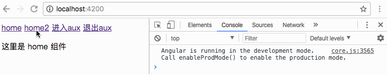
CanDeactivate
canDeactivate 处理从当前路由离开的情况。
用法与 canActivate 类似，但需要在参数中指定离开时的组件。
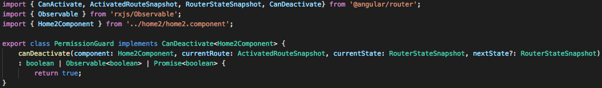
Resolve
未完待续